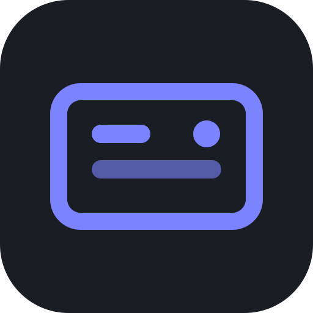
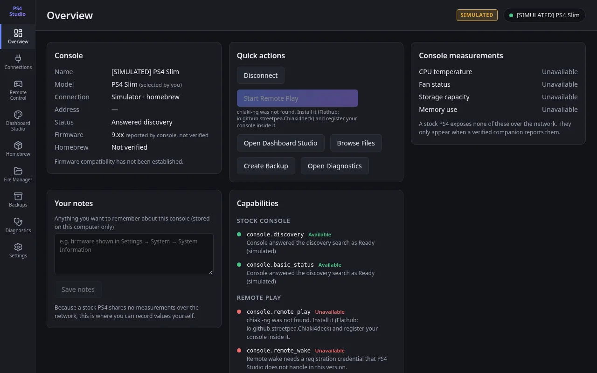
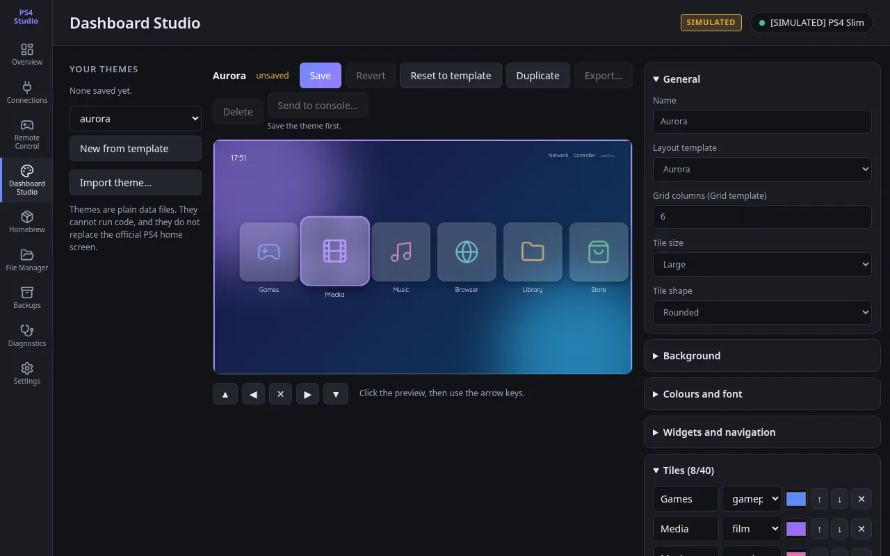
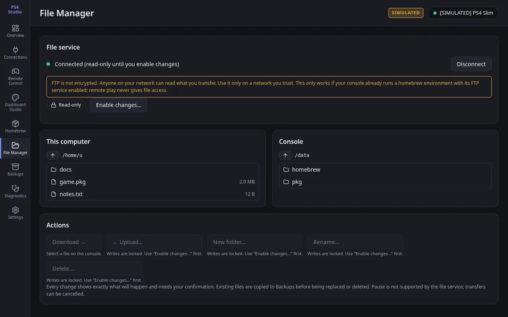
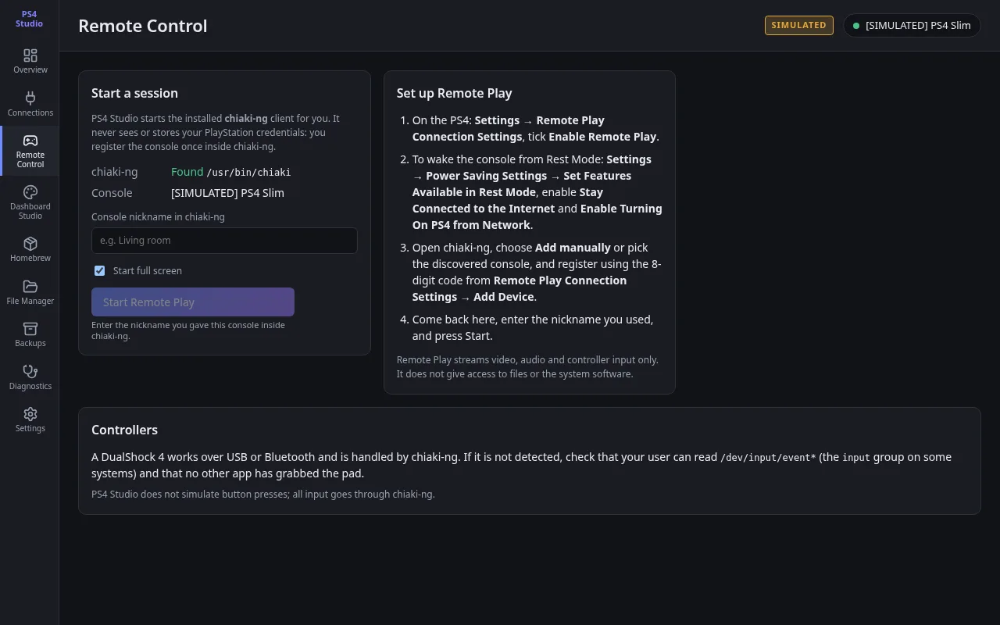

LAN discovery
UDP search on port 987, plus Connect-by-IP with a Remote Play TCP 9295 fallback when a console ignores the UDP search.
Stock PS4
PS4 StudioFree and open source Debian app for a PlayStation 4 on your LAN. Version 0.1.0 · simulator-verified.
PS4 Studio discovers a console on your network, launches Remote Play through the chiaki-ng you already installed, designs offline dashboards, and only unlocks homebrew file tools after a real capability check. It is an independent project, not affiliated with Sony.
Interactive demo with sample data. It cannot see your network or any console, and nothing leaves this page.
PS4 Studio is a free, open source desktop app for Debian that talks to a PlayStation 4 on your local network. On a stock console it can search the LAN, show honest capability status, and start Remote Play by launching your installed chiaki-ng as a separate process. Offline, Dashboard Studio designs and exports original console-style themes with a 1080p TV preview. File Manager, Homebrew and companion theme transfer only appear after verified probes against a console that already runs a homebrew environment — never from an open port alone, and never by installing exploits. Features that need hardware have been developed against a built-in simulator and automated tests; physical-console validation is still incomplete. Version 0.1.0.
Version 0.1.0 · Released November 2026 · Screenshots and the demo use simulator fixtures, not a live PS4.
Capabilities are verified by probes. Unknown stays unavailable, with a reason. Writes stay locked until you unlock them for the session and confirm each change.
UDP search on port 987, plus Connect-by-IP with a Remote Play TCP 9295 fallback when a console ignores the UDP search.
Stock PS4Detects chiaki-ng (native or Flatpak) and starts it for you. Registration keys and passcodes never appear on the command line.
Needs chiaki-ngOriginal Minimal, Aurora, Grid and Classic templates. Schema-validated JSON themes, 1080p preview, keyboard and gamepad navigation. Offline.
Desktop onlyRead-only by default. Every write is planned, confirmed, backed up locally first, and audited. Uploads use rename-swap, never delete-before-rename.
Homebrew FTPLists local .pkg files, verifies checksums against sidecar manifests, and copies only through the confirmed flow. Never runs or installs packages.
Authenticated (not encrypted) theme transfer to a PS4 Studio companion. The console-side app is still an untested OpenOrbis skeleton.
ExperimentalFourteen labelled scenarios with real UDP, FTP and companion servers so you can explore without hardware.
OfflineLocal and capability checks, with a sanitised export that masks IPs, MACs and credential-like lines.
Stock PS4No firmware flashes, exploits, remote shells, PSN credentials, DRM bypass, or package downloads. Themes do not replace the official PS4 home screen.
By designThese are screenshots of the packaged UI driven by the built-in simulator. They are labelled SIMULATED in the app.




Honest status of what has been run. Release prep is complete; a clean-machine apt install and broad hardware validation are still open.
| Platform | Status |
|---|---|
| Debian (amd64) | .deb builds with Tauri. Developed and launched on KDE Plasma / Wayland. GNOME and X11 are untested. A full clean-VM apt install has not been recorded yet. |
| Stock PS4 | Discovery and Remote Play paths are implemented. One real console was observed answering Remote Play on TCP 9295 while ignoring UDP search. End-to-end chiaki-ng sessions are not yet documented. |
| Homebrew PS4 (FTP) | Simulator-verified only. Path policy follows published GoldHEN notes; not verified against a physical jailbroken console. |
| PS4 companion app | Protocol core tested on the host (make host-test). OpenOrbis console binary is an untested skeleton. |
| Windows / macOS | Not planned for v0.1. |
Runtime needs WebKitGTK 4.1 and GTK 3 (pulled in by the package). The app runs as your user; no root is required at runtime.
.debsudo apt install ./ps4-studio_0.1.0_amd64.deb
ps4-studioDownload the .deb from GitHub Releases when a release is published. Prefer verifying the published checksum before you install.
pnpm install
cd apps/desktop/src-tauri
cargo tauri build --bundles debInstall chiaki-ng, register your console inside it once, then enter that nickname under Remote Control. PS4 Studio never passes --registkey or --passcode.
Open the app and choose Connections → Offline simulator. Dashboard Studio works fully offline. File and companion features need a homebrew-capable scenario.
Read-only by default. Network timeouts everywhere. No secrets in logs. Simulator output is always labelled.
An open port is never treated as evidence. FTP needs a greeting, login and listing. Companion needs a successful authenticated pair.
INSPECT → PLAN → CONFIRM → APPLY → VERIFY, with a local checksummed backup before overwrite or delete, and an audit row for every APPLY.
Nothing phones home. Diagnostics exports are sanitised. FTP and companion links are unencrypted — use them only on a network you trust.
PS4 Studio lists its gaps. Please read them before you rely on it for a console you care about.
Most features are simulator-verified. Real Remote Play sessions, GoldHEN FTP layout and the OpenOrbis companion still need documented hardware runs. Some consoles ignore UDP discovery even when Remote Play answers — use Add by IP and Connect.
File tools only work if you already run a homebrew environment. Mistakes can affect saves and packages. Prefer Sony’s own backup tools before experimenting, and keep writes unlocked only while you need them.
No. PS4 Studio is an independent open source project. It is not affiliated with, endorsed by, or sponsored by Sony Interactive Entertainment. “PlayStation” and “PS4” are trademarks of their owners and are used only to describe compatibility.
No. Remote Play is video and controller input through chiaki-ng. File Manager needs a separate homebrew FTP service that you already enabled on the console.
No. Themes are for Dashboard Studio and, later, the PS4 Studio companion app. They do not replace the official PS4 home screen.
There is no telemetry and no account. Network traffic is only the LAN discovery, Remote Play launch of chiaki-ng, optional FTP, and optional companion link you start yourself.
Open an issue on GitHub. For security reports, read the security policy first.
PS4 Studio is free and open source. If it saves you time, sponsoring helps me keep fixing bugs, answering issues and shipping updates. Every bit helps, and you can stop any time.